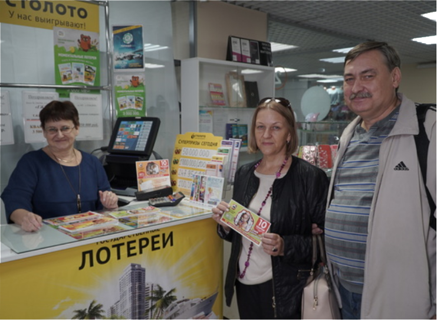

Победитель 318-го тиража лотереи «Жилищная лотерея». Дата ТВ-трансляции: 01 января 2019 года»
Марина Бородовских
Марина Бородовских работает главным бухгалтером. В свободное время она занимается рукоделием: вышивает бисером картины и делает украшения.

Марина сделала подарок сотруднице киоска, в котором купила счастливый билет.
Об участии
Марина никогда раньше не участвовала в лотереях, впервые купила билет «Жилищной лотереи» в киоске. Женщина говорит, что её не покидало предчувствие победы.
О выигрыше
1 января 2019 года Марина смотрела трансляцию розыгрыша тиража и поняла, что выиграла квартиру. «Было очень волнительно и радостно! Тут же рассказала мужу, мы подняли бокалы за удачное начало года!» — вспоминает участница. Женщина отметила свою победу речной прогулкой на катамаране с мужем, дочкой Марией и её приятелем. «Мама это заслужила, она много работала, а теперь появилась возможность жить в своё удовольствие», — говорит Мария.
О жизни после
Победительница забрала выигрыш деньгами и первым делом купила автомобиль. «Мы долго выбирали новую машину, хотели небольшую, чёрную. Нашли то, что искали», — рассказывает Григорий. Теперь семья будет ездить за город на комфортном седане. Часть оставшейся суммы Марина решила потратить на отдых у моря и помощь близким.